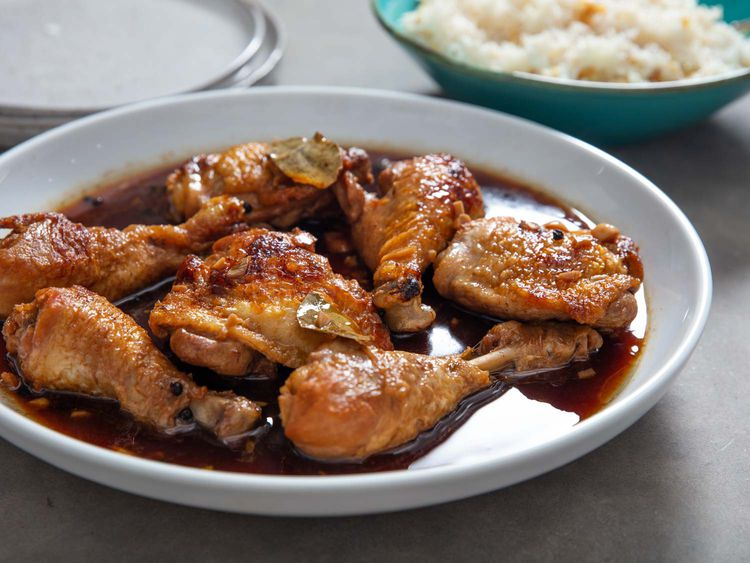

Home
Chicken Adobo

Ingredients
- 1 tablespoon (15ml) canola oil or other neutral oil
- 4 bone-in, skin-on chicken legs, separated into thighs and drumsticks (about 2 1/2 pounds; 1.15kg)
- Kosher salt
- 8 cloves garlic, thinly sliced
- 2 whole fresh bay leaves (or 3 whole dried bay leaves)
- 1 1/2 teaspoons whole black peppercorns
- 1 1/4 cups (300ml) water
- 1 cup (240ml) soy sauce
- 1 cup (240ml) rice vinegar (see note)
- Steamed white rice or garlic fried rice, for serving
Steps
-
In a heavy-bottomed pot or Dutch oven, heat oil over medium heat until shimmering.
Blot chicken dry with paper towels, then season lightly all over with salt.
-
Working in batches if necessary, add chicken pieces to pot in a single layer, skin side down,
making sure not to overcrowd the pot. Cook until well browned, 6 to 7 minutes. Using tongs,
flip chicken pieces and cook until lightly brown on the second side, about 3 minutes.
Transfer chicken to a plate and set aside.
-
Add garlic, bay leaves, and peppercorns to the now-empty pot and cook, stirring constantly,
until the mixture is very fragrant and the garlic turns a light golden color, about 30 seconds.
-
Add water and stir with a wooden spoon, scraping up any brown bits on the bottom of the pot.
Add soy sauce and vinegar, return chicken pieces to the pot, increase heat to high, and bring
liquid to a boil.
-
Reduce heat to low, cover, and simmer until chicken is cooked through and tender, about 20 minutes,
turning the chicken pieces halfway through.
-
To serve, the chicken is best after sitting overnight in the refrigerator, but it can also be served
immediately with steamed white rice or garlic fried rice. The chicken pieces can also be briefly broiled
before serving.
-
To broil the chicken adobo, adjust oven rack to 6 inches below the broiler element and preheat broiler
to high. Transfer chicken pieces to a paper towel-lined rimmed baking sheet and blot dry with more paper towels.
-
Arrange chicken skin side up on the baking sheet and broil until the skin is crispy and lightly charred,
about 2 minutes. Keep an eye on the chicken to ensure it does not burn.
-
Serve immediately with steamed white rice or garlic fried rice, passing the adobo sauce at the table.